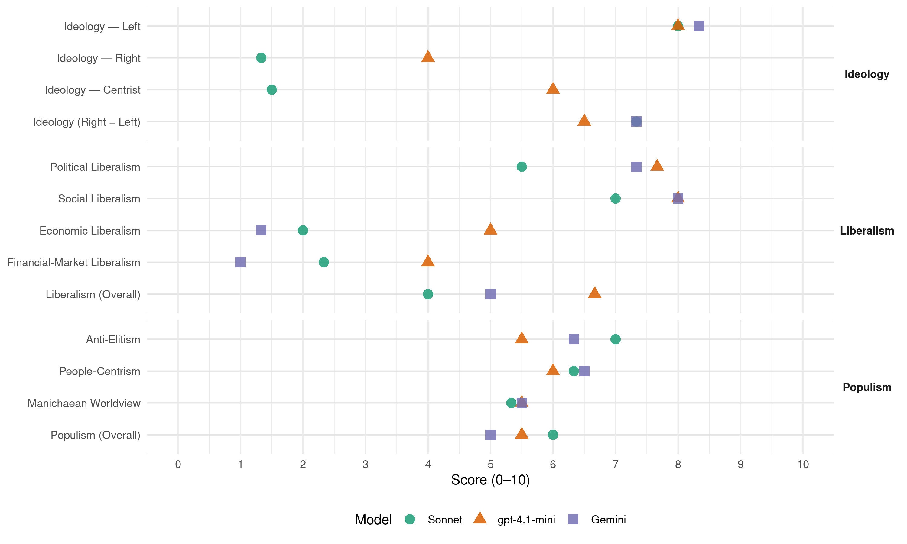

SP (Netherlands, 2003)
manifesto_id 22220_200301
Get full text: This site shows derived annotations and short verbatim quotes only. The full manifesto text is © Manifesto Project / WZB — obtain it via manifesto-project.wzb.eu using the manifesto_id above.
Headline scores
| Dimension | Sonnet | gpt-4.1-mini | Gemini |
|---|---|---|---|
| Populism (Overall) | 6.0 | 5.5 | 5.0 |
| Anti-Elitism | 7.0 | 5.5 | 6.3 |
| People-Centrism | 6.3 | 6.0 | 6.5 |
| Manichaean Worldview | 5.3 | 5.5 | 5.5 |
| Ideology (Right − Left) | 7.3 | 6.5 | 7.3 |
| Liberalism (Overall) | 4.0 | 6.7 | 5.0 |
| Political Liberalism | 5.5 | 7.7 | 7.3 |
| Social Liberalism | 7.0 | 8.0 | 8.0 |
| Economic Liberalism | 2.0 | 5.0 | 1.3 |
| Financial-Market Liberalism | 2.3 | 4.0 | 1.0 |
Evidence per dimension
Economic Liberalism
Gemini · score 1.0 · verified · chunk 1
“de privatiseringsprojecten worden bevroren”
met name in de verbetering van zorg, onderwijs, milieu en veiligheid. De privatiseringsprojecten worden bevroren en de regie van de overheid komt terug op belangrijke terreinen als zorg, vervoer, telecommunicatie
Gemini · score 1.0 · verified · chunk 2
“Door liberalisering en internationalisering van de elektriciteitsmarkt”
Lucht- en scheepvaart zullen meer dan nu moeten inzetten op CO2-reductie. Door liberalisering en internationalisering van de elektriciteitsmarkt komt steeds meer vuile stroom Nederland binnen. We dienen ons tegen die ontwikkeling te verzetten
Gemini · score 2.0 · verified · chunk 3
“stop te komen op alle privatiseringsplannen”
Er dient een stop te komen op alle privatiseringsplannen, met name voor het openbaar vervoer
gpt-4.1-mini · score 3.0 · verified · chunk 1
“De privatiseringsprojecten worden bevroren en de regie van de overheid komt terug”
1 We investeren grootschalig in de sociale wederopbouw, met name in de verbetering van zorg, onderwijs, milieu en veiligheid. De privatiseringsprojecten worden bevroren en de regie van de overheid komt terug op belangrijke terreinen als zorg, vervoer, telecommunicatie en ruimtelijke ordening.
gpt-4.1-mini · score 7.0 · verified · chunk 2
“De overheid hoort haar verantwoordelijkheid weer te nemen voor de volkshuisvesting. Wetgeving moet de belangen van economisch zwakke groepen woningzoekenden beter gaan beschermen.”
Het begrip ‘sociale volkshuisvesting’ lijkt door de politiek besmet verklaard. Alles draait voortaan om het bedienen van de koopkrachtige consumenten, die behoefte hebben aan ruime, luxe woningen. De al aanwezig tweedeling tussen rijke en arme wijken wordt hierdoor verder versterkt. Daarin moet verandering komen. De overheid hoort haar verantwoordelijkheid weer te nemen voor de volkshuisvesting. Wetgeving moet de belangen van economisch zwakke groepen woningzoekenden beter gaan beschermen.
gpt-4.1-mini · score 5.0 · verified · chunk 3
“Er dient een Europees minimumtarief ingevoerd te worden van 35% voor de vennootschapsbelasting”
Binnen de Europese Unie worden landen tegen elkaar uitgespeeld door het internationale bedrijfsleven. Zij concurreren via de belastingheffing met elkaar, om bedrijven en daarmee werkgelegenheid en economische groei binnen te halen. De afgelopen jaren is de vennootschapsbelasting (winstbelasting) internationaal steeds verder verlaagd. Er dient een Europees minimumtarief ingevoerd te worden van 35% voor de vennootschapsbelasting.
Sonnet · score 2.0 · verified · chunk 1
“privatiseringsprojecten worden bevroren”
De privatiseringsprojecten worden bevroren en de regie van de overheid komt terug op belangrijke terreinen als zorg, vervoer, telecommunicatie en ruimtelijke ordening.
Sonnet · score 2.0 · verified · chunk 2
“liberalisering en internationalisering van de elektriciteitsmarkt”
Door liberalisering en internationalisering van de elektriciteitsmarkt komt steeds meer vuile stroom Nederland binnen. We dienen ons tegen die ontwikkeling te verzetten.
Sonnet · score 2.0 · verified · chunk 3
“stop te komen op alle privatiseringsplannen”
Er dient een stop te komen op alle privatiseringsplannen, met name voor het openbaar vervoer en de energiesector.
Financial-Market Liberalism
Gemini · score 1.0 · verified · chunk 1
“met handen en voeten gebonden aan de banken”
onder grote druk zet. Momenteel leeft bijna een kwart van de boerengezinnen onder het bestaansminimum. Ze zijn met handen en voeten gebonden aan de banken. Daardoor zijn ze niet of nauwelijks in staat over te stappen op duurzame
Gemini · score 1.0 · verified · chunk 3
“belasting op internationaal kapitaalverkeer”
zou, het liefst wereldwijd, een belasting op internationaal kapitaalverkeer moeten worden ingevoerd.
gpt-4.1-mini · score 4.0 · verified · chunk 3
“Nederland moet zich keren tegen het witwassen van zwart geld en het initiatief nemen om belastingontduiking te voorkomen”
Nederland moet zich keren tegen het witwassen van zwart geld en het initiatief nemen om belastingontduiking te voorkomen. Er dienen in Europees verband maatregelen getroffen te worden om meer druk te zetten op belastingparadijzen als Luxemburg. Tegen de 35 landen die op de zwarte lijst van belastingparadijzen staan moeten strafmaatregelen worden genomen.
Sonnet · score 2.0 · verified · chunk 1
“vermogenswinstbelasting met een tarief van 35%”
Grootverdieners mogen vanaf 226.890 euro 72% gaan betalen en er komt een vermogenswinstbelasting met een tarief van 35%.
Sonnet · score 3.0 · verified · chunk 2
“hypotheekrenteaftrek dient gekoppeld te worden”
De hypotheekrenteaftrek dient gekoppeld te worden aan het maximum van de nationale hypotheekgarantie (225.000 euro / 495.000 gulden in 2003) en door de overheid tot aan dat bedrag gegarandeerd te worden.
Sonnet · score 2.0 · verified · chunk 3
“belasting op internationaal kapitaalverkeer moeten worden ingevoerd”
Om de destructieve werking van het ongecontroleerde, geliberaliseerde kapitaalverkeer in te dammen zou, het liefst wereldwijd, een belasting op internationaal kapitaalverkeer moeten worden ingevoerd.
Political Liberalism
Gemini · score 8.0 · verified · chunk 1
“het algemeen kiesrecht werd ingevoerd”
vieren we het eeuwfeest van de Nederlandse democratie. Dan zal het honderd jaar geleden zijn dat onder druk van grote delen van de bevolking het algemeen kiesrecht werd ingevoerd en het principe van ‘één mens, één stem’ ging gelden.
Gemini · score 7.0 · verified · chunk 2
“rechterlijke macht dient onafhankelijk te zijn”
RECHTERLIJKE MACHT ONAFHANKELIJK EN TOEGANKELIJK De rechterlijke macht dient onafhankelijk te zijn en rechtspraak moet in het openbaar plaatsvinden.
Gemini · score 7.0 · verified · chunk 3
“belang van een goedwerkende democratie”
veel meer aandacht worden besteed aan het belang van een goedwerkende democratie. Vakken als maatschappijleer
gpt-4.1-mini · score 8.0 · verified · chunk 1
“De uitverkoop van de democratie moet stoppen”
2 Democratie … 2 De uitverkoop van de democratie moet stoppen. Er komt een brede maatschappelijke discussie over bescherming en bevordering van de democratie.
gpt-4.1-mini · score 8.0 · verified · chunk 2
“De parlementaire controle op het werk van de Inlichtingen- en Veiligheidsdienst moet aanzienlijk worden versterkt.”
De parlementaire controle op het werk van de Inlichtingen- en Veiligheidsdienst moet aanzienlijk worden versterkt. Ongeoorloofde politieke interventies zoals die in het verleden plaatsvonden moeten in de toekomst absoluut voorkomen worden.
gpt-4.1-mini · score 7.0 · verified · chunk 3
“Democratie moet je leren en daarom dienen jongeren systematisch opgeleid te worden tot ‘democraat’”
Democratie moet je leren en daarom dienen jongeren systematisch opgeleid te worden tot ‘democraat’. In het middelbaar onderwijs en het beroepsonderwijs moet veel meer aandacht worden besteed aan het belang van een goedwerkende democratie. Vakken als maatschappijleer en staatsinrichting horen op het schoolrooster, net als filosofie.
Sonnet · score 6.0 · verified · chunk 1
“revitaliseren van de democratie moet hoofddoel”
Al deze ontwikkelingen tasten de vitaliteit van onze democratie in ernstige mate aan. Het revitaliseren van de democratie moet hoofddoel zijn van beleid.
Sonnet · score 5.0 · verified · chunk 2
“NS dienen weer onder democratisch controle”
De overheid bezit nog alle aandelen van de NS, maar zij heeft nog weinig zeggenschap. De NS dienen weer onder democratisch controle te komen.
Sonnet · score 5.0 · mixed · chunk 3
“Overdracht van bevoegdheden aan de Europese Unie wordt bevroren”
Overdracht van bevoegdheden aan de Europese Unie wordt bevroren totdat het geweldige democratische gat dat nu bestaat gedicht is en de bevolking een dergelijke overdracht daadwerkelijk steunt.
Liberalism (Overall)
Gemini · score 5.0 · verified · chunk 1
“het algemeen kiesrecht werd ingevoerd”
vieren we het eeuwfeest van de Nederlandse democratie. Dan zal het honderd jaar geleden zijn dat onder druk van grote delen van de bevolking het algemeen kiesrecht werd ingevoerd en het principe van ‘één mens, één stem’ ging gelden.
Gemini · score 5.0 · verified · chunk 2
“rechterlijke macht dient onafhankelijk te zijn”
RECHTERLIJKE MACHT ONAFHANKELIJK EN TOEGANKELIJK De rechterlijke macht dient onafhankelijk te zijn en rechtspraak moet in het openbaar plaatsvinden.
Gemini · score 5.0 · verified · chunk 3
“vrijheid van religie is verankerd in”
De vrijheid van religie is verankerd in onze grondwet, evenals de scheiding tussen
gpt-4.1-mini · score 6.0 · verified · chunk 1
“De uitverkoop van de democratie moet stoppen”
2 Democratie … 2 De uitverkoop van de democratie moet stoppen. Er komt een brede maatschappelijke discussie over bescherming en bevordering van de democratie.
gpt-4.1-mini · score 8.0 · verified · chunk 2
“De parlementaire controle op het werk van de Inlichtingen- en Veiligheidsdienst moet aanzienlijk worden versterkt.”
De parlementaire controle op het werk van de Inlichtingen- en Veiligheidsdienst moet aanzienlijk worden versterkt. Ongeoorloofde politieke interventies zoals die in het verleden plaatsvonden moeten in de toekomst absoluut voorkomen worden.
gpt-4.1-mini · score 6.0 · verified · chunk 3
“Democratie moet je leren en daarom dienen jongeren systematisch opgeleid te worden tot ‘democraat’”
Democratie moet je leren en daarom dienen jongeren systematisch opgeleid te worden tot ‘democraat’. In het middelbaar onderwijs en het beroepsonderwijs moet veel meer aandacht worden besteed aan het belang van een goedwerkende democratie. Vakken als maatschappijleer en staatsinrichting horen op het schoolrooster, net als filosofie.
Sonnet · score 4.0 · verified · chunk 1
“marktwerking leidt tot tweedeling”
Marktwerking leidt, zeker in combinatie met de schaarste in de zorg, tot tweedeling. Er is geen enkel bewijs dat marktwerking leidt tot lagere kosten
Sonnet · score 4.0 · verified · chunk 2
“privatisering van deze zorg is buitengewoon riskant”
Privatisering van deze zorg is buitengewoon riskant en dus ongewenst. Om de veiligheid te vergroten mag ook een beroep gedaan worden op de eigen verantwoordelijkheid van burgers.
Sonnet · score 4.0 · mixed · chunk 3
“neoliberalisme dat de Nederlandse politiek nu al jarenlang domineert”
Zo zijn private rijkdom en collectieve armoede hand in hand gegaan, ideologisch verklaard en aangemoedigd door het neoliberalisme dat de Nederlandse politiek nu al jarenlang domineert.
Anti-Elitism
Gemini · score 8.0 · verified · chunk 1
“Zij zijn daartoe aangemoedigd door politici”
ieder voor zich’-mentaliteit. ‘Als het met mij goed gaat, waarom zou ik me dan zorgen maken over een ander?’ denken velen. Zij zijn daartoe aangemoedigd door politici die jaar op jaar beweerden dat de democratisch gecontroleerde overheid niet bij
Gemini · score 4.0 · verified · chunk 2
“Die bestuurscultuur moet op de helling.”
regels en het toezicht erop. Te veel wordt te gemakkelijk door de vingers gezien. Die bestuurscultuur moet op de helling. En wie zich onverantwoordelijk gedraagt, dient daarvoor de aansprakelijkheid te dragen.
Gemini · score 7.0 · verified · chunk 3
“neoliberaal project, dat zich richt op”
De Europese Unie is verworden tot een neoliberaal project, dat zich richt op het vergroten van de macht van grote ondernemingen
gpt-4.1-mini · score 8.0 · verified · chunk 1
“politici die jaar op jaar beweerden dat de democratisch gecontroleerde overheid niet bij machte was”
Zij zijn daartoe aangemoedigd door politici die jaar op jaar beweerden dat de democratisch gecontroleerde overheid niet bij machte was en is de publieke zaak overeind te houden en dat de markt dat maar moest doen.
gpt-4.1-mini · score 3.0 · verified · chunk 3
“De Europese Unie is verworden tot een neoliberaal project, dat zich richt op het vergroten van de macht van grote ondernemingen”
Tot nu toe is veel te veel van onze soevereiniteit al uit handen gegeven aan ondemocratische supranationale organen. De Europese Unie is verworden tot een neoliberaal project, dat zich richt op het vergroten van de macht van grote ondernemingen en het verkleinen van de zeggenschap van het democratische publieke bestuur. De twijfel bij de bevolking in de lidstaten is erg groot.
Sonnet · score 8.0 · verified · chunk 1
“twintig jaar rechtse, neoliberale politiek”
Na twintig jaar rechtse, neoliberale politiek in vier varianten (CDA/VVD, CDA/PvdA, PvdA/VVD/D66 en het kortstondige avontuur van VVD en CDA met nieuwkomer LPF) blijkt dat deze weg doodloopt
Sonnet · score 6.0 · verified · chunk 2
“Geld en macht bepalen de inrichting”
De ruimtelijke ordening is veel te veel uit handen gegeven aan particuliere bedrijven. Geld en macht bepalen de inrichting van ons land en niet het algemeen belang en de behoeften van de bevolking.
Sonnet · score 7.0 · verified · chunk 3
“neoliberaal project, dat zich richt op het vergroten van de macht van grote ondernemingen”
De Europese Unie is verworden tot een neoliberaal project, dat zich richt op het vergroten van de macht van grote ondernemingen en het verkleinen van de zeggenschap van het democratische publieke bestuur.
Ideology — Centrist
gpt-4.1-mini · score 6.0 · verified · chunk 1
“brede maatschappelijke discussie over bescherming en bevordering van de democratie”
Er komt een brede maatschappelijke discussie over bescherming en bevordering van de democratie. Jongeren krijgen een opleiding tot ‘democraat’. Migranten krijgen eerder stemrecht voor de gemeente en voortaan ook voor de provincie.
gpt-4.1-mini · score 6.0 · verified · chunk 3
“Samen de werkelijkheid onder ogen zien, samen kiezen, samen leren, samen wonen, samen leven”
Met een Deltaplan voor een geïntegreerde samenleving kunnen we het tij keren. Uitgangspunten daarbij horen te zijn: samen de werkelijkheid onder ogen zien, samen kiezen, samen leren, samen wonen, samen leven.
Sonnet · score 1.0 · verified · chunk 1
“bieden wij de kiezers ons alternatief”
In plaats van rechtsaf te slaan met VVD en LPF of rechtdoor te gaan met PvdA en CDA, bieden wij de kiezers ons alternatief: de eerste weg links
Sonnet · score 2.0 · verified · chunk 2
“overheid dient haar verantwoordelijkheid weer te nemen”
De overheid dient haar verantwoordelijkheid weer te nemen over het openbaar vervoer. De zeggenschap over bus, trein, tram en metro hoort in overheidshanden.
Ideology — Left
Gemini · score 9.0 · verified · chunk 1
“eerlijker delen van de welvaart”
Socialistische Partij (SP) in 2003 naar de kiezers wil, is een radicale én realistische keuze voor sociale wederopbouw, voor eerlijker delen van de welvaart en voor een centrale plaats voor ecologie. In plaats van rechtsaf te slaan
Gemini · score 8.0 · verified · chunk 2
“bestrijding van de tweedeling en de armoede”
voorwaarden scheppen waardoor criminaliteit zoveel mogelijk wordt voorkomen: bestrijding van de tweedeling en de armoede; beter onderwijs; effectieve sociale zekerheid; betere huisvesting en buurtbeheer.
Gemini · score 8.0 · verified · chunk 3
“macht van grote ondernemingen en het verkleinen”
neoliberaal project, dat zich richt op het vergroten van de macht van grote ondernemingen en het verkleinen van de zeggenschap
gpt-4.1-mini · score 9.0 · verified · chunk 1
“Kies voor drastische verkleining van de enorme verschillen in inkomens en vermogens”
DIT IS DE EERSTE WEG LINKS: We pleiten ervoor dat we nu beginnen met de sociale wederopbouw door de strijd aan te gaan met de sociale tweedeling, zoals die in de achterliggende jaren gegroeid is. Daarvoor zijn drie koerswijzigingen nodig: l Geef de publieke sector weer de plaats die ze verdient: in het hart van onze beschaving. l Kies voor drastische verkleining van de enorme verschillen in inkomens en vermogens, nationaal en internationaal.
gpt-4.1-mini · score 7.0 · verified · chunk 3
“Steun geven aan een betere verdeling van de welvaart, aan meer onderwijs en meer gezondheidszorg is daarom ver te prefereren boven het bombarderen van doorgaans onschuldige mensen”
De voedingsbodem voor terrorisme ligt in armoede, uitbuiting en achterstelling. Door die weg te nemen wordt de aantrekkingskracht, en daarmee de dreiging van terrorisme daadwerkelijk verminderd. Steun geven aan een betere verdeling van de welvaart, aan meer onderwijs en meer gezondheidszorg is daarom ver te prefereren boven het bombarderen van doorgaans onschuldige mensen.
Sonnet · score 9.0 · verified · chunk 1
“Spreiding van kennis, inkomen en macht”
Spreiding van kennis, inkomen en macht wordt kernpunt van beleid. Mensen met lage inkomens gaan er flink op vooruit
Sonnet · score 7.0 · verified · chunk 2
“Shell en Esso daaraan meebetalen”
Het is redelijk dat Shell en Esso daaraan meebetalen. Zij worden immers sinds jaar en dag slapend rijk van hun exploitatierecht van het Nederlandse aardgas.
Sonnet · score 8.0 · verified · chunk 3
“meer nivellerend belastingstelsel”
We willen voor de toekomst een meer nivellerend belastingstelsel. We stellen voor dat boven op het huidige toptarief van 52% weer een belastingschijf van 72% komt.
Ideology (Right − Left)
Gemini · score 8.0 · verified · chunk 1
“eerlijker delen van de welvaart”
Socialistische Partij (SP) in 2003 naar de kiezers wil, is een radicale én realistische keuze voor sociale wederopbouw, voor eerlijker delen van de welvaart en voor een centrale plaats voor ecologie. In plaats van rechtsaf te slaan
Gemini · score 6.0 · verified · chunk 2
“bestrijding van de tweedeling en de armoede”
voorwaarden scheppen waardoor criminaliteit zoveel mogelijk wordt voorkomen: bestrijding van de tweedeling en de armoede; beter onderwijs; effectieve sociale zekerheid; betere huisvesting en buurtbeheer.
Gemini · score 8.0 · verified · chunk 3
“macht van grote ondernemingen en het verkleinen”
neoliberaal project, dat zich richt op het vergroten van de macht van grote ondernemingen en het verkleinen van de zeggenschap
gpt-4.1-mini · score 7.0 · verified · chunk 1
“Kies voor drastische verkleining van de enorme verschillen in inkomens en vermogens”
DIT IS DE EERSTE WEG LINKS: We pleiten ervoor dat we nu beginnen met de sociale wederopbouw door de strijd aan te gaan met de sociale tweedeling, zoals die in de achterliggende jaren gegroeid is. Daarvoor zijn drie koerswijzigingen nodig: l Geef de publieke sector weer de plaats die ze verdient: in het hart van onze beschaving. l Kies voor drastische verkleining van de enorme verschillen in inkomens en vermogens, nationaal en internationaal.
gpt-4.1-mini · score 6.0 · verified · chunk 3
“De Europese Unie is verworden tot een neoliberaal project, dat zich richt op het vergroten van de macht van grote ondernemingen”
Tot nu toe is veel te veel van onze soevereiniteit al uit handen gegeven aan ondemocratische supranationale organen. De Europese Unie is verworden tot een neoliberaal project, dat zich richt op het vergroten van de macht van grote ondernemingen en het verkleinen van de zeggenschap van het democratische publieke bestuur. De twijfel bij de bevolking in de lidstaten is erg groot.
Sonnet · score 9.0 · verified · chunk 1
“anti-corporatieve elite, herverdeling”
Grootverdieners mogen vanaf 226.890 euro 72% gaan betalen en er komt een vermogenswinstbelasting met een tarief van 35%
Sonnet · score 6.0 · verified · chunk 2
“Shell en Esso daaraan meebetalen”
Het is redelijk dat Shell en Esso daaraan meebetalen. Zij worden immers sinds jaar en dag slapend rijk van hun exploitatierecht van het Nederlandse aardgas.
Sonnet · score 7.0 · verified · chunk 3
“anti-corporatief, herverdeling, sociale gelijkheid”
De tekst bevat sterke linkse populistische elementen: herverdeling via belastingen, anti-privatisering, anti-neoliberalisme en kritiek op grote ondernemingen.
Ideology — Right
gpt-4.1-mini · score 3.0 · verified · chunk 1
“Nederland stopt met het overdragen van nog meer bevoegdheden aan de ondemocratische Europese Unie”
Migranten krijgen eerder stemrecht voor de gemeente en voortaan ook voor de provincie. Nederland stopt met het overdragen van nog meer bevoegdheden aan de ondemocratische Europese Unie.
gpt-4.1-mini · score 5.0 · verified · chunk 3
“Stemrecht voor gemeentelijke – en voortaan ook provinciale – verkiezingen dient gegeven te worden aan iedereen die ten minste drie jaar rechtmatig in Nederland verblijft”
Stemrecht voor gemeentelijke – en voortaan ook provinciale – verkiezingen dient gegeven te worden aan iedereen die ten minste drie jaar rechtmatig in Nederland verblijft. In die periode dienen nieuwe ingezetenen voldoende ingeburgerd te zijn om te kunnen kiezen voor gemeenteraad en Provinciale Staten, waarvan de beslissingen invloed hebben op hun directe woon- en leefomgeving.
Sonnet · score 1.0 · verified · chunk 1
“integratie bestrijden we de groeiende scheiding”
Met een deltaplan voor integratie bestrijden we de groeiende scheiding in witte en zwarte scholen en de segregatie in de wijken
Sonnet · score 1.0 · verified · chunk 2
“onbeperkt toelaten van economische migranten”
maar met de erkenning van het individuele recht om een betere toekomst te zoeken moet ook onderkend worden dat onbeperkt toelaten van economische migranten om velerlei redenen niet mogelijk is.
Sonnet · score 2.0 · verified · chunk 3
“inmenging van andere landen en van buitenlandse religieuze organisaties”
Inmenging van andere landen en van buitenlandse religieuze organisaties in het Nederlandse onderwijs door middel van subsidiegelden of op andere wijze, met het doel invloed te verwerven, is ongewenst.
Manichaean Worldview
Gemini · score 6.0 · verified · chunk 1
“de communicatie-infrastructuur moet uit de greep van het grote geld”
Noodplan Spoor’ en een bevriezing van de openbaar-vervoertarieven. De communicatie-infrastructuur moet uit de greep van het grote geld. 8 Onderwijs moet als investering in de toekomst gezien worden
Gemini · score 5.0 · verified · chunk 3
“private rijkdom en collectieve armoede hand”
Zo zijn private rijkdom en collectieve armoede hand in hand gegaan, ideologisch verklaard
gpt-4.1-mini · score 7.0 · verified · chunk 1
“De uitverkoop van de democratie moet stoppen”
2 Democratie … 2 De uitverkoop van de democratie moet stoppen. Er komt een brede maatschappelijke discussie over bescherming en bevordering van de democratie.
gpt-4.1-mini · score 4.0 · verified · chunk 3
“Oorlog voeren om terrorisme te bestrijden is echter niet effectief en eist veel onschuldige slachtoffers”
Nederland heeft zich laten betrekken in de oorlog tegen het terrorisme en neemt daardoor actief deel aan oorlogshandelingen in Afghanistan. Ook een oorlog tegen Irak lijkt Nederlandse steun te hebben. Oorlog voeren om terrorisme te bestrijden is echter niet effectief en eist veel onschuldige slachtoffers. Daarom moet er wereldwijd, onder leiding van de Verenigde Naties, veel meer aandacht komen voor de voedingsbodem van terrorisme.
Sonnet · score 6.0 · verified · chunk 1
“Schrijnende armoede en zinloze rijkdom”
Schrijnende armoede en zinloze rijkdom zijn beide uitwassen van het huidige marktdenken.
Sonnet · score 5.0 · verified · chunk 2
“rijken kunnen snel vervoerd worden”
De rijken kunnen snel vervoerd worden, terwijl mensen met minder geld het moeten doen met vertraagde of niet rijdende treinen.
Sonnet · score 5.0 · verified · chunk 3
“private rijkdom en collectieve armoede hand in hand gegaan”
Zo zijn private rijkdom en collectieve armoede hand in hand gegaan, ideologisch verklaard en aangemoedigd door het neoliberalisme dat de Nederlandse politiek nu al jarenlang domineert.
People-Centrism
Gemini · score 7.0 · verified · chunk 1
“onder druk van grote delen van de bevolking”
vieren we het eeuwfeest van de Nederlandse democratie. Dan zal het honderd jaar geleden zijn dat onder druk van grote delen van de bevolking het algemeen kiesrecht werd ingevoerd en het principe van ‘één mens, één stem’ ging gelden.
Gemini · score 6.0 · verified · chunk 3
“zodat het volk van Europa kan beslissen”
referenda gehouden moeten worden, zodat het volk van Europa kan beslissen over haar eigen toekomst.
gpt-4.1-mini · score 7.0 · verified · chunk 1
“veel burgers die zich níet aangetrokken voelen tot het ‘ikke, ikke en de rest kan stikken’”
Gelukkig zijn er ook veel burgers die zich níet aangetrokken voelen tot het ‘ikke, ikke en de rest kan stikken’. Zij maken zich zorgen over de maatschappelijke ontwikkelingen op tal van terreinen en zoeken een alternatief.
gpt-4.1-mini · score 5.0 · verified · chunk 3
“De Nederlandse samenleving bestaat inmiddels voor een aanzienlijk deel uit burgers van allochtone afkomst”
De Nederlandse samenleving bestaat inmiddels voor een aanzienlijk deel uit burgers van allochtone afkomst. De verzamelnaam ‘allochtonen’ wordt te pas en te onpas gebruikt om deze omvangrijke en buitengewoon diverse bevolkingsgroep in de Nederlandse samenleving aan te duiden. Weinig onderscheid wordt gemaakt naar afkomst, religie, taal en cultuur, en de redenen van hun komst naar Nederland.
Sonnet · score 7.0 · verified · chunk 1
“eerlijker delen van de welvaart”
is een radicale én realistische keuze voor sociale wederopbouw, voor eerlijker delen van de welvaart en voor een centrale plaats voor ecologie
Sonnet · score 6.0 · verified · chunk 2
“niet het algemeen belang en de behoeften van de bevolking”
Geld en macht bepalen de inrichting van ons land en niet het algemeen belang en de behoeften van de bevolking. Om die ontwikkeling te stoppen dient de overheid hier de regie weer zelf in handen te nemen.
Sonnet · score 6.0 · verified · chunk 3
“het volk van Europa kan beslissen over haar eigen toekomst”
Over belangrijke en ingrijpende besluiten – zoals het goedkeuren van nieuwe Europese Verdragen – zouden referenda gehouden moeten worden, zodat het volk van Europa kan beslissen over haar eigen toekomst.
Populism (Overall)
Gemini · score 7.0 · verified · chunk 1
“Veel politici hebben hun eigen verantwoordelijkheid uit het oog verloren”
goed getroffen hebben uitzicht op een beter bestaan wordt geboden. Veel politici hebben hun eigen verantwoordelijkheid uit het oog verloren. Achtereenvolgende regeringen hebben met hun neoliberale politiek heel wat calculerende
Gemini · score 2.0 · verified · chunk 2
“Die bestuurscultuur moet op de helling.”
regels en het toezicht erop. Te veel wordt te gemakkelijk door de vingers gezien. Die bestuurscultuur moet op de helling. En wie zich onverantwoordelijk gedraagt, dient daarvoor de aansprakelijkheid te dragen.
Gemini · score 6.0 · verified · chunk 3
“neoliberaal project, dat zich richt op”
De Europese Unie is verworden tot een neoliberaal project, dat zich richt op het vergroten van de macht van grote ondernemingen
gpt-4.1-mini · score 7.0 · verified · chunk 1
“politici die jaar op jaar beweerden dat de democratisch gecontroleerde overheid niet bij machte was”
Zij zijn daartoe aangemoedigd door politici die jaar op jaar beweerden dat de democratisch gecontroleerde overheid niet bij machte was en is de publieke zaak overeind te houden en dat de markt dat maar moest doen.
gpt-4.1-mini · score 4.0 · verified · chunk 3
“De Europese Unie is verworden tot een neoliberaal project, dat zich richt op het vergroten van de macht van grote ondernemingen”
Tot nu toe is veel te veel van onze soevereiniteit al uit handen gegeven aan ondemocratische supranationale organen. De Europese Unie is verworden tot een neoliberaal project, dat zich richt op het vergroten van de macht van grote ondernemingen en het verkleinen van de zeggenschap van het democratische publieke bestuur. De twijfel bij de bevolking in de lidstaten is erg groot.
Sonnet · score 7.0 · verified · chunk 1
“neoliberalisme dood”
Daarom loopt de rechtse weg van het neoliberalisme dood. En daarom wordt het tijd voor de eerste weg links.
Sonnet · score 5.0 · verified · chunk 2
“Geld en macht bepalen de inrichting”
De ruimtelijke ordening is veel te veel uit handen gegeven aan particuliere bedrijven. Geld en macht bepalen de inrichting van ons land en niet het algemeen belang en de behoeften van de bevolking.
Sonnet · score 6.0 · verified · chunk 3
“uitverkoop van de publieke zaak te ver is doorgeschoten”
In de samenleving groeit echter het besef dat deze uitverkoop van de publieke zaak te ver is doorgeschoten.
Social Liberalism